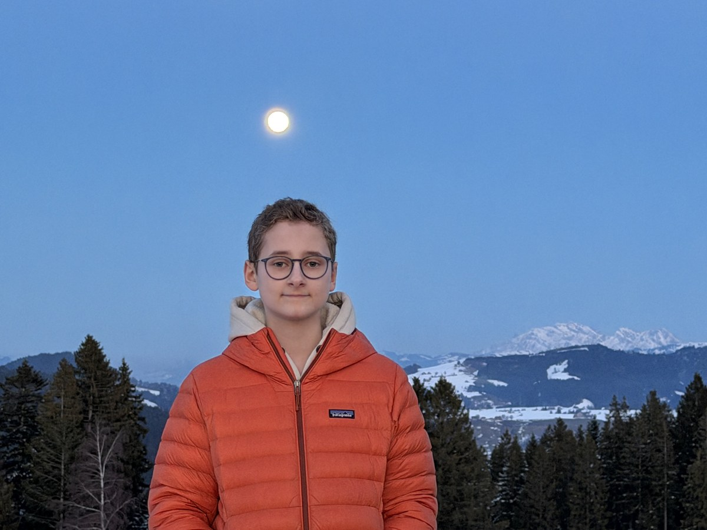

Hi, I'm Louis.
Hi, ich bin Louis.
14 years old, based in Schwyz, Switzerland. I built Fintro because every teenager deserves to understand money — and nobody was teaching it properly.
14 Jahre alt, aus dem Kanton Schwyz. Ich habe Fintro gebaut, weil jeder Jugendliche Geld verstehen sollte — und niemand es wirklich erklärt.

I'm Louis Fritz — grew up in Germany, spent a year in the United States, and now live in Schwyz, Switzerland. Moving between countries gave me a perspective that's hard to get any other way.
Ich bin Louis Fritz — aufgewachsen in Deutschland, ein Jahr in den USA gelebt, und jetzt in Schwyz, Schweiz. Zwischen Ländern zu ziehen gibt einem eine Perspektive, die kaum anders zu bekommen ist.
In every country, one thing was the same: nobody taught young people how money actually works. Not in school, not really anywhere. It's one of the most important life skills — and it's just missing from education, everywhere.
In jedem Land war eine Sache gleich: Niemand hat jungen Menschen erklärt, wie Geld wirklich funktioniert. Nicht in der Schule, kaum anderswo. Es ist eine der wichtigsten Fähigkeiten im Leben — und fehlt überall im Bildungssystem.
So I built Fintro. What started as a school project became a real platform covering compound interest, budgeting, debt, taxes, and investing — explained honestly, for people my age.
Also baute ich Fintro. Was als Schulprojekt begann, wurde eine echte Plattform: Zinseszins, Budgetierung, Schulden, Steuern, Investitionen — ehrlich erklärt, für Menschen in meinem Alter.
From school project to real platform
Vom Schulprojekt zur echten Plattform
It started as a school presentation called MoneyMind. As the vision grew, the name did too. Fintro blends finance + intro — and echoes the idea of starting, moving, going.
Es begann als Schulpräsentation namens MoneyMind. Als die Vision wuchs, der Name auch. Fintro verbindet Finance + Intro — und steht für Starten, Bewegen, Loslegen.
Ready to actually learn this?
Bereit, das wirklich zu lernen?
Unit 1 takes about 20 minutes. Free. Most adults wish they'd done this at your age.
Unit 1 dauert ca. 20 Minuten. Kostenlos. Die meisten Erwachsenen wünschten, sie hätten das in deinem Alter gelernt.
Start Unit 1 — Free → Unit 1 starten — Kostenlos →